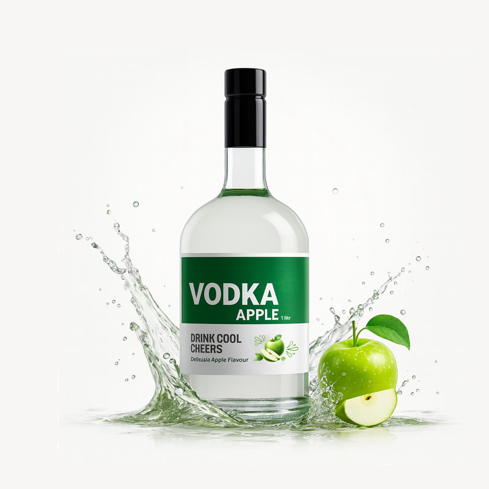

ودکا سیب سبز (Apple Vodka)
قیمت: ۶0۰,۰۰۰ تومان
خلاصه:
ودکای ممتاز با طعم طبیعی و تند سیب سبز. یک نوشیدنی عالی و خنک برای فصول گرم و کوکتلهای میوهای.
مشخصات:
- حجم : ۱۰۰۰ میلی لیتر
- درصد الکل : ۴۰% VOL
- مواد اولیه اصلی : سیب سبز تازه، غلات ممتاز
- پیشنهاد سرو : خنک، با سودا و برگ نعناع
توضیحات کامل:
این ودکا از بهترین غلات و آب چشمه تهیه شده و طی فرآیند تقطیر چند مرحلهای به بالاترین حد خلوص رسیده است. عصاره طبیعی سیب سبز، طعمی ترش و شیرین و باطراوت به آن بخشیده که برای تهیه انواع کوکتلهای مدرن یا نوشیدن به صورت شاتهای یخزده بسیار مناسب است.